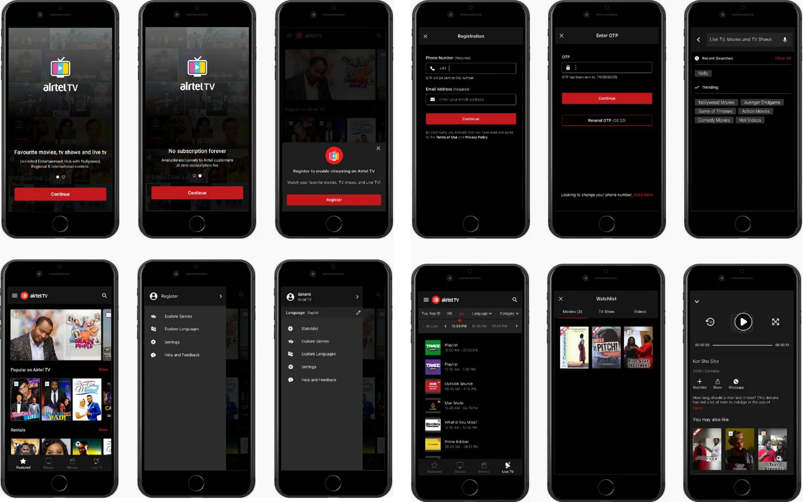
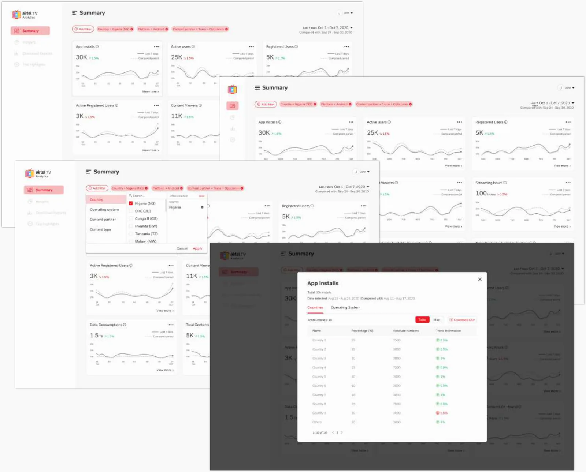

Datami · Streaming · 2018–210 → 1Hands-on2 min read
Airtel TV Africa: one designer, fourteen markets
Airtel wanted its video streaming app in 14 African countries. As the only designer alongside more than 30 engineers, I led the app on Android and iOS, and designed the analytics portal Airtel’s own teams ran on.
- 450K+Registered users (2020)
- 3Countries live (2020)
- 14Countries reached in the end
Registered users and countries live as of 2020, from my portfolio case study.
- The problem
- Turn Airtel’s Indian streaming app into one for 14 African markets, with the features each market asked for, launched country by country.
- My role
- Lead Product Designer and the only designer: I led design from start to end, alongside 30+ engineers, a product manager and the country leads.
- The call
- Rebuild the app on a dark theme made for long viewing, on one component system every later feature could reuse.
- The result
- 450K+ registered users in the first three markets by 2020, all 14 markets reached in the end, and an analytics portal Airtel’s team used in place of emailed reports.

The situation
Airtel TV gave Airtel’s prepaid and postpaid subscribers unlimited streaming of movies, shows and live TV. Airtel wanted it in 14 African countries, for people aged roughly 16 to 45.
The starting point was the Airtel TV app that had run in India for several years. So the job was not a blank page. It was turning an Indian product into an African one: the features each market asked for, on an app the engineers already knew, launched country by country, with one designer for all of it.
My role
I was the Lead Product Designer and the only designer. I led design from start to end for the Android and iOS apps, alongside more than 30 engineers, an engineering manager, a product manager and the country operating leads.
Requirements came from Airtel’s African stakeholders through the product manager, and I walked engineering through every new feature. Twice a week I reviewed progress and delays with the development lead, the product manager, the CTO and the COO. As engineering built each feature, I reviewed it against the design and logged what needed fixing.
Built for long viewing
Engineering’s first goal was simply to get the app into the Play Store and App Store. Once it was there, I proposed a bigger change.
On that system I designed and shipped the features the African markets asked for:
- Choosing the app’s language
- Content ratings
- Buying a data bundle from inside the app
- Renting individual titles (transactional video on demand)
Taking work off people’s desks
Two problems sat outside the app, and both cost people time every week.
Content partners sent logos and artwork in whatever size they had, and much of it was unusable in the app, so every new title meant another round of emails. I wrote one set of guidelines for logos and artwork and shared it with existing and new partners, to cut that back and forth.
Inside Airtel, every report on the app went out by email, assembled by hand. I designed an analytics portal so Airtel’s stakeholders could check users, content ingestion and other metrics themselves.
The second version, below, was agreed by both teams, built, and used by Airtel’s team.

Outcome
By 2020 Airtel TV had more than 450,000 registered users in its first three markets, Nigeria, Zambia and Uganda. It went on to reach all 14 African markets. Parental controls, a better first-time onboarding and recommendations for returning viewers were next on the roadmap when I moved on to new work.